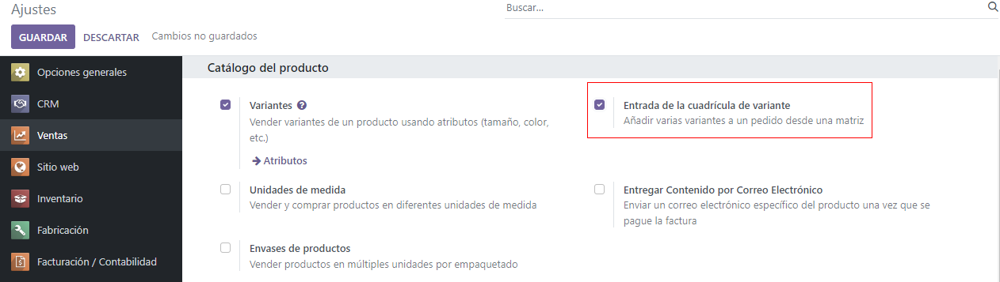
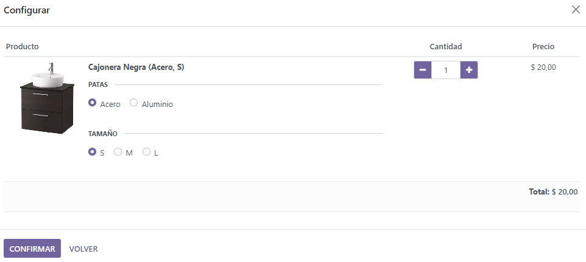
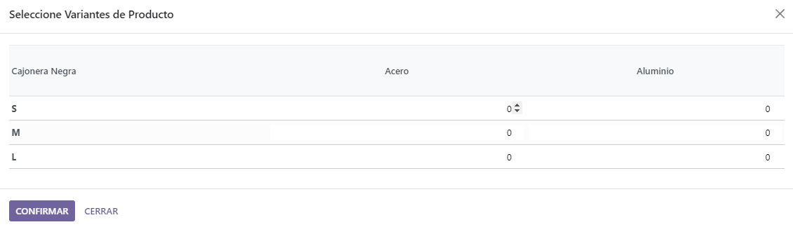
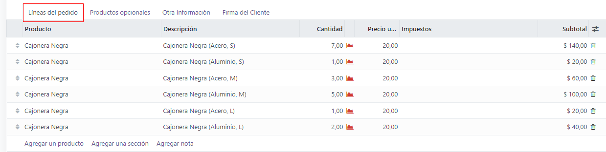

Variantes de producto en cotizaciones y órdenes de venta¶
Antes de hablar a detalle acerca de cómo usar las variantes de productos en las cotizaciones y en las órdenes de ventas, le recomendamos consultar la documentación sobre Variantes de producto en Odoo.
Una vez familiarizado con los principios básicos de las variantes de productos, la siguiente información describe cómo puede agregar dichas variantes a las cotizaciones y a las órdenes de ventas mediante el configurador de productos o la entrada de la tabla de órdenes.
Nota
Tenga en cuenta que, en la página de ajustes de la aplicación Ventas, la opción se llama Entrada en la tabla de variantes; mientras que en el formulario de los productos, se llama Entrada en la tabla de órdenes.
Ajustes¶
Al trabajar con variantes de productos, Odoo usa el configurador de productos de manera predeterminada. Para agregar la opción de entrada en la tabla de variantes, esa función debe estar activada en la aplicación Ventas de Odoo. Esta opción abre una ventana emergente en la cotización u orden de ventas para simplificar el proceso para seleccionar una variante.
Para activar ese ajuste, vaya a y baje hasta la sección Catálogo de productos. Después, seleccione la casilla junto a la opción Entrada en la tabla de variantes y haga clic en Guardar.
Nota
También debe estar activada la función Variantes para usar las variantes de productos en las cotizaciones y las órdenes de ventas.
Configuración de productos¶
Una vez que esté activada la función Entrada en la tabla de variantes, ambas opciones (Configurador de productos y Entrada en la tabla de órdenes) estarán disponibles en cada formulario de producto.
Para configurar un formulario de producto para usar un configurador de producto o la entrada en la tabla de variantes vaya a para ver todos los productos en la base de datos.
Luego, seleccione el producto que desea configurar o haga clic en Nuevo para crear un nuevo producto desde cero. En el formulario del producto, haga clic en la pestaña Atributos y variantes donde podrá ver, modificar y agregar variantes.
En la parte inferior de la pestaña Atributos y variantes hay una sección de Selección de variantes de ventas con dos opciones: Configurador de productos y Entrada en la tabla de órdenes.
Nota
Tenga en cuenta que estas opciones solo aparecen si, por lo menos, dos valores de un atributo se agregaron al registro.
Estas opciones determinan qué método se usa al agregar variantes de producto a las cotizaciones u órdenes de ventas.
El Configurador de producto abre una ventada emergente que muestra claramente todas las variantes de productos disponibles para ese producto particular cuando se agrega a la cotización. Sin embargo, solo puede seleccionar o añadir una variante a la vez.
La Entrada en la tabla de órdenes proporciona la misma información que el Configurador de producto a modo de tabla lo que le permite al usuario seleccionar números más grandes de variantes únicas de productos y agregarlos a la cotización u orden de ventas, en una sola vista.
Configurador de productos¶
La función del configurador del producto aparece en la ventana emergente Configurar, tan pronto como un producto con, por lo menos, dos variantes se agrega a la cotización o a la orden de ventas, pero solo si selecciona la opción de Configurador de producto en su formulario de producto.
Nota
La ventana emergente Configurar también aparece si la opción Entrada en la tabla de órdenes no está activada, puesto que es la opción predeterminada que usa Odoo al gestionar variantes de productos en las cotizaciones y/o en las órdenes de ventas.
La opción Configurador de producto le permite a los vendedores escoger exactamente qué variante de producto agregar a la cotización u orden de ventas mediante un formato similar al de las compras en línea.
Entrada en la tabla de órdenes¶
La función de entrada en la tabla de órdenes aparece como una ventana emergente de Escoger variantes de producto, tan pronto como un producto con, por lo menos, dos variantes se agrega a la cotización u orden de ventas, pero solo si selecciona la opción Entrada en la tabla de órdenes en su formulario de producto.
La ventana emergente para Escoger variantes de productos incluye todas las opciones de variantes para ese producto en particular. Desde aquí, el vendedor puede asignar cuántas de cada variante le gustaría agregar a la cotización u orden de ventas al mismo tiempo.
Cuándo haya seleccionado las cantidades y variantes deseadas, el vendedor solo tiene que hacer clic en Confirmar y esas órdenes se agregan de manera inmediata a la cotización u orden de ventas en la pestaña Líneas de la orden.
Ver también